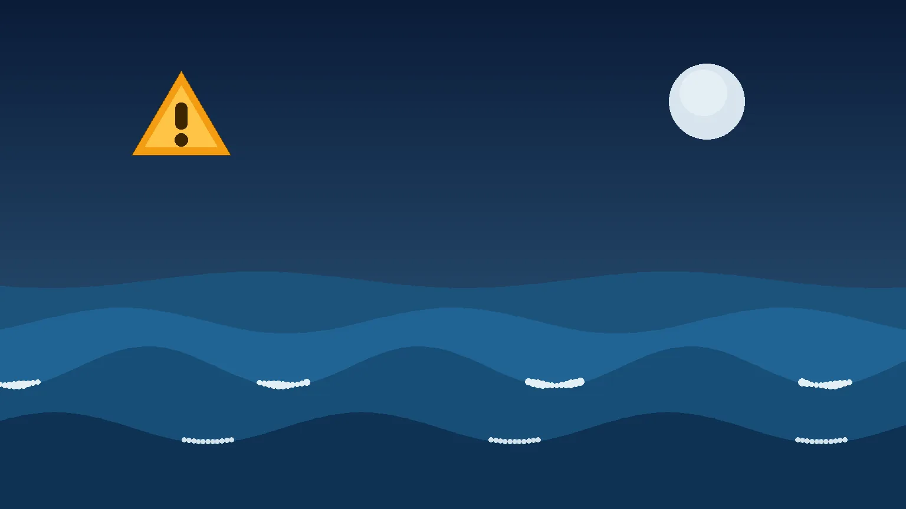

Tsunami Belirtileri: Deprem Sonrası Tsunami Nasıl Anlaşılır?
Türkiye üç tarafı denizlerle çevrili bir deprem ülkesi — ve Ege kıyılarımız tsunami üretebilen fay sistemlerinin hemen yanında. 30 Ekim 2020'de İzmir Sığacık'ta yaşadığımız tsunami, bu riskin teorik olmadığını gösterdi. Peki denizin size doğru gelmekte olduğunu önceden nasıl anlarsınız?
Tsunami Nedir, Nasıl Oluşur?
Tsunami, deniz tabanının ani ve büyük ölçekli hareketiyle oluşan uzun periyotlu dalga dizisidir. En sık nedeni deniz tabanında, sığ derinlikte, Mw 6.5 üzeri depremlerdir; denizaltı heyelanları ve volkanik aktivite de tsunami üretebilir. Kritik nokta şudur: depremin tabanı dikey yönde oynatması gerekir — bu yüzden her deniz depremi tsunami yapmaz, ama hangisinin yapacağını kıyıdan bilemezsiniz. Şüphe durumunda güvenli davranış esastır.
3 Doğal Uyarı İşareti
1. Uzun ve şiddetli sarsıntı: Kıyıdayken ayakta durmakta zorlandığınız ya da 20 saniyeden uzun süren bir deprem hissettiyseniz, bu sizin resmi uyarınızdır. Sarsıntı biter bitmez denizden uzaklaşın — sirenleri veya telefon uyarısını beklemeyin.
2. Denizin ani çekilmesi: Su, dakikalar içinde olağan dışı biçimde kıyıdan uzaklaşır, deniz tabanı ve kayalar açığa çıkar. Bu, tsunaminin "nefes alması"dır — çekilen su dalga olarak geri gelir. Açığa çıkan tabana kesinlikle inmeyin; 2004 Hint Okyanusu felaketinde en çok can kaybı meraklı izleyiciler arasında yaşandı.
3. Denizden gelen gürültü: Yaklaşan tsunami, jet motoru veya yük treni benzeri derin bir uğultu çıkarabilir. Geceleri ve görüşün kapalı olduğu durumlarda bazen tek uyarı budur.
Ege'de Süre Çok Kısa: Dakikalar İçinde Karar Verin
Okyanus tsunamilerinde uyarı merkezleri saatler öncesinden duyuru yapabilir. Ege ve Akdeniz'de ise kaynak kıyıya çok yakındır: dalgalar kıyıya 10-30 dakikada, yakın kaynaklı olaylarda birkaç dakikada ulaşabilir. 2020 Sığacık'ta deprem ile suyun yerleşime girmesi arasında yarım saatten az vardı. Bu yüzden Ege kıyılarında kural basittir: uyarıyı beklemeden, doğal işaretlere göre hareket edin.
Tsunami Anında Ne Yapmalı?
1. Sarsıntı durur durmaz kıyıdan uzaklaşın; hedef deniz seviyesinden en az 30 metre yüksek bir nokta veya kıyıdan 2-3 km içerisi. 2. Mümkünse yürüyerek gidin — kıyı yolları saniyeler içinde kilitlenir. 3. Yüksek bina varsa ve kaçacak vakit yoksa 3. kat ve üzerine çıkın (betonarme, sağlam yapı). 4. İlk dalga geçti diye kıyıya dönmeyin: dalgalar 10-60 dakika arayla saatlerce sürebilir ve en büyüğü ilki olmayabilir. 5. AFAD'ın resmi "tehlike geçti" duyurusunu bekleyin; acil durumda 112'yi arayın. Deprem anındaki temel davranışlar için deprem anında yapılacaklar rehberine bakın.
Türkiye'de Tsunami Uyarısı Kim Verir?
Türkiye'de tsunami izleme ve uyarı görevi Kandilli Rasathanesi Bölgesel Deprem-Tsunami İzleme ve Değerlendirme Merkezi'ndedir; merkez, UNESCO koordinasyonundaki Doğu Akdeniz-Ege-Karadeniz tsunami uyarı sistemi (NEAMTWS) içinde akredite servis sağlayıcıdır. Uyarılar AFAD üzerinden duyurulur. Deprem verilerini anlık takip etmek için son dakika deprem sayfamızı kullanabilirsiniz.
Türkiye'nin Tsunami Geçmişi
Bu risk yeni değil: 30 Ekim 2020 Ege Denizi (Sisam) depremi sonrası Sığacık ve Seferihisar kıyılarında 1 metreyi aşan dalgalar yerleşim içine girdi; bir vatandaşımız hayatını kaybetti. 1999 İzmit depreminde körfezde 2 metreyi aşan tsunami dalgaları ölçüldü. 2017 Bodrum-Kos depremi Bodrum'da küçük çaplı taşkınlara yol açtı. Tarihsel kayıtlarda 1509 ve 1894 İstanbul depremlerinde de Marmara'da tsunami raporlanmıştır. Bölgenizin risk profili için 81 il deprem risk haritasına göz atın.